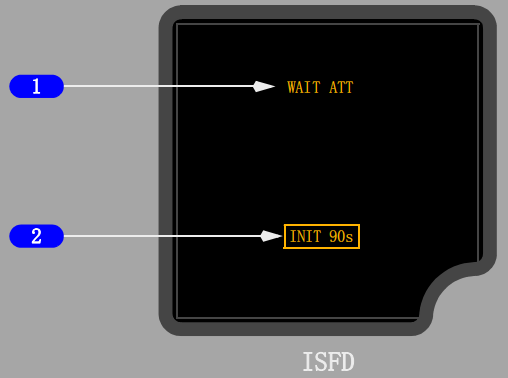

内部相关链接:
导航转换
IRS输入
IRS设置输入
大气数据(ADIRU)
1 进近(APP)方式电门
按压 -
• 空白时，选择进近(APP)
• 显示APP时，选择背航道(BCRS)
• 显示BCRS时，空白。
2 进近方式信号牌
指示所选的进近方式：
• 空白 - 不显示进近偏离数据
• APP(进近) - 显示ILS航向道和下滑道偏离数据
• BCRS(背航道)- 在反向进近时，航向道指针反向感应。
3 姿态显示
显示飞机姿态。
• 相对于坡度刻度指示坡度
• 指示于飞机标志指示地平线
• 俯仰超过30度时，大红箭头(V型)表示姿态过大，指引飞机到地平线。
4 显示亮度电门
按压 -
• + 增加显示亮度
• - 降低显示亮度
5 飞机标志
指示相对于地平线的飞机姿态。
6 空速指示
空速超过30海里/小时时，指示当前空速。
7 姿态重置(RST)电门
按压并保持至少2秒
• 将飞机标志与地平线对准
• 重置大约需要10秒
• 如果先前一次尝试失败，开始新的初始化程序（仅地面）。
8 百帕/英寸(HP/IN)电门
按压
- 改变气压基准的单位。
9 气压设定
指示用气压选择器选定的气压设定值。
如果用气压选择器选择气压设定值时，则显示STD。
10 外界光线传感器
自动根据外界光线条件调节显示亮度。
11 下滑道指针和偏差刻度
下滑道指针指示与飞机相对应的下滑道位置。
• 收到下滑道信号时，指针可见
• 选择进近(APP)方式时，刻度可见
• 选择背航道(BCRS)方式时，指针和刻度都消失。
12 当前高度
13 航向道指针和偏差刻度
航向道指针指示与飞机相对应的航向道位置。
• 收到航向道信号时，指针可见
• 选择进近(APP)或背航道(BCRS)方式时，刻度可见。
14 气压（BARO）选择器
旋转
- 改变气压设定值。
按压 -
• 选择标准气压设定值(29.92英寸汞柱/1013百帕)
• 如果显示STD，选择预选的气压设定值。
15 航向指示
显示飞机航向。

1 姿态信息
指示姿态显示状态。
• ATT：RST(琥珀色) - 必须用姿态复位电门复位姿态
• ATT 10s(琥珀色) - 正在进行10秒钟姿态重新校准
• WAIT ATT(琥珀色) - 表示正在对姿态丧失进行临时自我修正
2 初始化信息
INIT 90s(琥珀色) - 90秒初始化倒计时。
• 如果探测到动作过大，停止倒计时
• 移动停止时，恢复倒计时
• 如果在6分钟内未完成初始化，将显示姿态复位(ATT:RST)。
1 坡度指示器和刻度
刻度标有 0、10、20、30、45和60度。
2 下滑道故障旗
• 下滑道接收机失效
• 下滑道指针消失。
3 地平线和俯仰角刻度
俯仰刻度增量为5度。
4 下滑道指针和偏差刻度
• 指针指示下滑道位置
• 出现以下情况时，指针不显示
• 进近选择器在关位或在背航道(B/CRS)位
• 无计算的数据
• 下滑道接收机失效
• 刻度指示偏差量。
5 进近方式选择器
OFF - 下滑道和航向道指针消失(缩进)。
APP - 下滑道和航向道指针可见；
ILS信号由1号ILS接收机提供。
B/CRS - 在背航道进近时,航向道指针反向传感；不显示下滑道指针。
6 陀螺(GYRO)故障旗
姿态不可靠。
7 航向道指针和偏差刻度
• 指针指示航向道位置
• 出现以下情况时，指针不显示
• 进近选择器在关位
• 无计算数据
• 航向道接收机失效
• 刻度指示偏差量。
8 飞机标志
9 航向道故障旗
• 航向道接收机失效
• 航向道指针消失。
10 校准控制
拔出(PULL)
- 使飞机标志与地平线对齐校准
松开(RELEASE)
- 控制按钮缩回。
1 备用高度表
接收来自备用静压孔的静压。
2 数字计数器
• 指示以千英尺为增量的当前高度
• 当高度低于10,000英尺时，窗左侧出现绿色的故障旗
• 当高度低于零英尺时，窗左侧出现条纹故障旗。
3 备用空速指示器
接收来自辅助空速管探头的冲压空气压力和来自备用静压孔的静压。
4 气压设定值控制器
转动 - 调节两个气压窗内的气压修正值。
5 高度指针
指示以百英尺为增量的当前高度。
6 气压设定窗
按气压设置控制上进行设定，以毫巴和英寸汞柱指示气压修正值。
备用飞行仪表
备用飞行仪表包括：
• 备用磁罗盘
• 备用姿态指示器(选型)
• 备用高度表/空速指示器(选型)
• 集成备用飞行显示(选型)
• 备用无线电磁指示器
备用磁罗盘
机上配备了一个标准液晶阻尼式备用磁罗盘。位于罗盘旁的卡片提供航向修正系数。
备用姿态指示器(选型)
备用姿态指示器提供独立于主姿态显示的姿态信息。
指示器由电瓶汇流条供电，在丧失了所有正常的交流电源后，只要电瓶电源可用，指示器仍保持通电。
陀螺在被供电约60秒后达到工作速度。
指示器需要3分钟时间才能达到精确度要求。
集成备用飞行显示(ISFD)
集成备用飞行显示(ISFD)显示姿态、空速、高度、航向道/下滑道偏离和磁航向信息。
姿态信息根据内部惯性传感器提供的数据计算得出。
空速和高度根据直接连接到辅助空速管和备用静压源的气压数据计算得出。
航向道/下滑道偏离由1号多模接收机（MMR）提供。
磁航向由1号ADIRU提供。
磁航向在极地区域不可用。(当磁航向在极地区域变得不可用时，较新版本的ISFD将自动转换到真航向)
Note: 必须用备用磁罗盘来证实航向信息。
电瓶汇流条向ISFD供电。打开（ON）电瓶电门，则ISFD启动。
10秒后，开始进行为时90秒的初始化程序。
初始化期间会显示姿态(ATT)和初始化90秒(INIT 90s)信息。
如果飞机移动过大，则初始化暂停；当飞机的移动在初始化可接受范围内时，初始化恢复。
一旦完成初始化程序，则会显示姿态信息。
当探测到ISFD瞬时超限的情况时，可能会使姿态显示变为空白并显示WAIT ATT或ATT:RST信息。
当显示ATT:RST信息时，要求使用姿态复位电门复位姿态。这将使飞机图标与地平线对齐。
在地面，必须在飞机处于静止状态时才能使用姿态复位电门。
在空中使用姿态复位电门时，机翼必须水平且飞机不处于加速飞行状态。
在此过程中，会显示姿态10秒(ATT 10s)信息。如果飞机无法保持直线平飞10秒，可能会显示ATT:RST信息。
如果尝试复位失败，则一直显示“ATT∶RST” 信息，且ISFD不会进入正常工作状态。
备用高度表/空速指示器(选型)
备用高度和空速显示在单个仪表上。
备用高度表接收来自备用静压口的静压。
当前高度为数字式显示。指针以百英尺为单位指示高度。
气压值设定窗显示由气压设定控制器调定的气压设定值，以毫巴和英寸/汞柱为单位。
高度表显示范围是-1000英尺至50000英尺。
备用空速表接收来自辅助空速管探头的冲压空气压力和备用静压孔的静压。
它提供以海里/小时为单位的当前空速。
备用无线电磁指示器
备用无线电磁指示器(RMI)显示磁航向和VOR/ADF向台方位。
RMI由交流备用汇流条供电，在丧失了所有正常的交流电源后，只要电瓶电源可用，指示器仍保持通电。